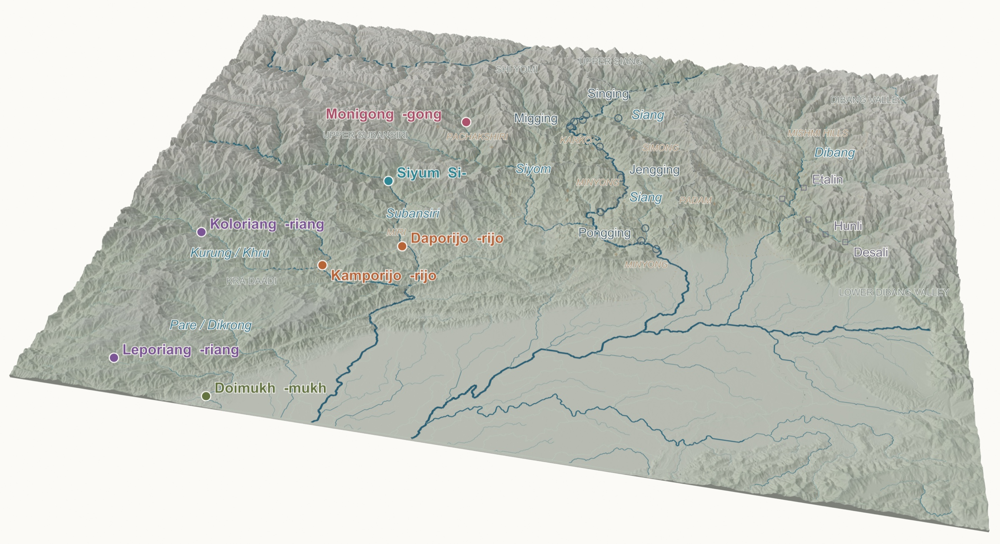

01 / GIS in Himalayan Regional Studies
Conference Project · ACPSS 2026
Corridors before Borders asks how river valleys, mountain passes, monasteries, and dzong (district seats) shaped travel and local authority in the eastern Himalaya before modern borders took shape. It traces these relationships through historical maps, multilingual place names, and travel accounts.
Explore the project ↗
02 / GEOG 458 · Course assignment
Following F. M. Bailey, a British political officer serving in Assam, in search of the elusive falls of the Tsangpo–Brahmaputra in 1913.
Where could Bailey and Morshead follow the river in 1913, and how did they describe the reach they could not see? A story map assignment for GEOG 458: Advanced Digital Geographies reads the journey alongside observations, photographs, and local testimony.
Explore the project ↗
03 / Historical Geography
Part of my commercial model-building project on the crooked-stern junk.
Following G. R. G. Worcester’s accounts to reconstruct the Yangtze’s shipping networks in the late Qing and Republican periods.
Separating seven commodity patterns from a 1935 map to examine their overlaps and their relationship to the Yangtze and its tributaries. Includes a related experiment in drawing navigation routes with Codex.
Explore the project ↗
04 / Navigating GIS and Envisioning Information
Coursework
GEOG 360 · GEOG 458 · GEOG 465 · GEOG 482
Three UW course assignments: an Iceland volcano map, a Tsangpo infrastructure map, and a story map for GEOG 458: Advanced Digital Geographies. Also includes a QGIS practice map prepared for the disaster-response organization Zhuo-Ming (卓明).
View course projects ↗About this collection
I use maps to examine how rivers connect places, how people make journeys through difficult terrain, and how those relationships enter the historical record. These projects bring source comparison and spatial analysis into different forms of presentation, from a regional commodity map to an interactive account of an expedition.